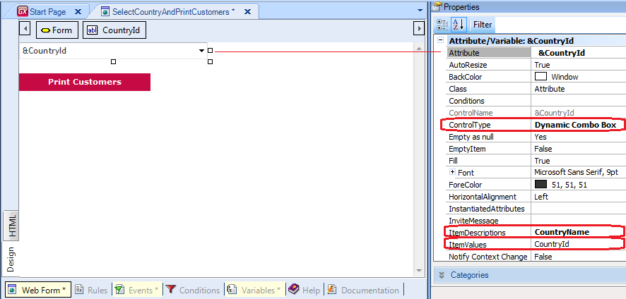

Call method
Calls a GeneXus object (either with transfer of parameters or not) such as a Web Panel or a Procedure, etc., from another object (which is the caller). SyntaxObjectName.Call([parm1, .... , parN]) Where: ObjectName par1, …, parN The Call method can be written in different sections of the caller object, depending on whether the caller is a Transaction, a Web Panel, a Procedure, etc. (if the caller is a Procedure, the Call method must be included in some line of its source; if the caller object is a Transaction, the call can be included in its rules section as well as inside an event, depending on the requirement, etc.). Important: The syntax of the Call method allows you to omit the dot and the Call, and the invocation will be exactly the same because GeneXus has the intelligence to detect that you are calling an object. Examples1) Suppose you have a Web Panel in your Knowledge Base, that only has a button included in its form. When the user presses the button, the event associated with the button is executed and the objective is to call a Procedure that prints all the customers. So, you define the following code inside the event associated with the button, to achieve the objective:
Event 'Print all customers'
PrintAllCustomers.call()
EndEvent
The following code behaves exactly like the above:
Event 'Print all customers'
PrintAllCustomers() //the dot and the call were omited
EndEvent
In both examples, the Procedure named PrintAllCustomers is called without parameters (so, no Parm rule is needed to be defined in the Procedure).
 When the user selects a country, the CountryId attribute value will be assigned to the &CountryId variable associated with the Dynamic Combo Box. After that, when the user presses the button, the event associated with the button will be executed. So, inside the event associated with the button, you have to define the invocation to the Procedure. In this case, you have to send to the Procedure the &CountryId variable as a parameter. The Procedure will receive the parameter (you must declare the parameter in the Procedure with the Parm rule); finally, you will use the received value in the Procedure, in order to filter the customers that belong to that country. The following code inside the event associated with the button, is calling the Procedure named PrintCustomers, and the &CountryId variable is sent to it as a parameter:
Event 'Print customers'
PrintCustomers(&CountryId)
EndEvent
The Procedure must have defined the following rule: parm(&CountryId); and the &CountryId variable is used in the Procedure source in order to filter the customers that belong to that country, like the following code shows: Notes for Objects for mobile applications developmentFor Smart Devices objects, the Call method must be written in the Native Mobile Applications Events. See alsoVideos |